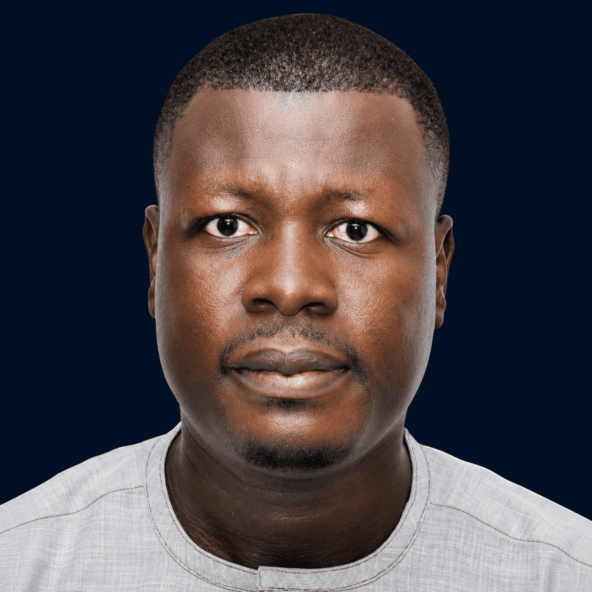

In progress
PhD Thesis — Intertextuality & Causality
A semantic analysis of discourse that bridges NLP and formal methods: from echoes between migration narratives to causal relations in life stories, in text and, next, in speech.
NLP for languages the industry forgot
Ngambay · spoken by ~1M people in Chad
Sakayo Toadoum Sari
PhD candidate in AI at CRIL-CNRS, Université d'Artois. I work on discourse semantics and causal reasoning, and on speech and multilingual evaluation for African languages: whether benchmark numbers actually measure what they claim to. If your language isn't in the dataset, build the dataset.
Open to research internships in 2027 · speech, multilingual NLP, evaluation
01 · About
I grew up in Chad speaking a language with almost no digital footprint. Today I build the technology that gives languages like mine one. My research at CRIL-CNRS (UMR 8188) connects two worlds that rarely meet: discourse-level NLP and formal methods. I study how narratives echo one another and how causal structure can be extracted from them, with formal guarantees rather than heuristics.
A second thread runs alongside it: speech and multilingual evaluation. Having built speech and translation systems for African languages, I keep meeting the same problem: automatic metrics say very little about whether a model understood anything. That question drives my benchmark work, and I'm extending it to speech, starting with Chadian languages.
I teach algorithmics at Université d'Artois. On YouTube, Sakayo Tech brings AI education in French to students across francophone Africa, and my mentorship programme supports young innovators in Chad. I've worked with UNICEF, EPFL, CDIAL and Batazia, and I contribute to the Masakhane and AfricaNLP communities as a researcher and reviewer.

Lens, France
02 · News
03 · Current work
A semantic analysis of discourse that bridges NLP and formal methods: from echoes between migration narratives to causal relations in life stories, in text and, next, in speech.
A new annotation-free task over 108 French migration narratives, validated on 816 expert-scored sentence pairs. A zero-shot LLM reaches 57% of the human noise ceiling, and a 31-feature hybrid reaches 69%.
PaperCodeAdding a contrastive coverage loss to LoRA reshapes representation geometry at unchanged accuracy: silhouette scores rise on all six GLUE tasks, with gains on African languages. Three negative results are reported, not hidden.
Features ranked by their role in Minimal Support Sets from Logical Analysis of Data: one ranking whatever the classifier, linked to the Holler–Packel and Deegan–Packel power indices.
A diagnostic probe asking whether MT quality metrics track causal reasoning in African languages. They correlate with accuracy far more loosely than their use in evaluation assumes.
Logical Analysis of Data built into random forest construction via Minimal Support Sets, producing abductive explanations roughly five times smaller than standard forests on microarray data.
Solo end-to-end French RAG pipeline built under strict compute constraints with open-weight models, scoring above the field mean.
Probing with inclusion-minimality guarantees: which dimensions a model actually needs to encode a property, certified rather than estimated.
AI education series in French for African students: concepts, careers and hands-on tools, published twice a week.
04 · Publications
Under review
Published
2026 Detecting Experiential Intertextuality Across Migration Routes: Beyond Surface Similarity in French Narratives SIGDIAL 2026 · first authorAlso published as Toadoum Sari Sakayo.
05 · Journey
SIGDIAL 2026 paper presented as an oral. Beyond Separability under review at NAACL 2027 and FIRLAD at AAMAS 2027. Teaching algorithmics, and building benchmarks for causal reasoning and speech in African languages.
Joined CRIL on the ANR HYCI project. RCCE consultancy for UNICEF in Chad. Trained and evaluated ASR and TTS models for African languages at CDIAL, and ran a human evaluation with 20+ annotators.
African Master's in Machine Intelligence as a Google & Meta Scholar, with a thesis on Ngambay–French translation trained on Google Cloud through a Google research credit grant. DeepMind-funded data science programme at AIMS Rwanda. Research internship at EPFL on polarisation detection. NLP engineering at Batazia. Trained 40+ students in Python and ML in Chad.
MSc in Industrial Mathematics as a MasterCard Foundation Scholar, and my first paper.
BSc in Applied Physics, then MSc in Physics. First steps in web development and ML at Limbe City Council.
06 · Skills
07 · Contact
Hosting a 2027 research intern in speech, multilingual NLP or evaluation? Building something for underserved languages, or want to collaborate on discourse, causality or African NLP? I'd love to hear from you.